| # | BID | Beatmap Info | Mods | Notes |
|---|---|---|---|---|
| 1 | 3409307 | 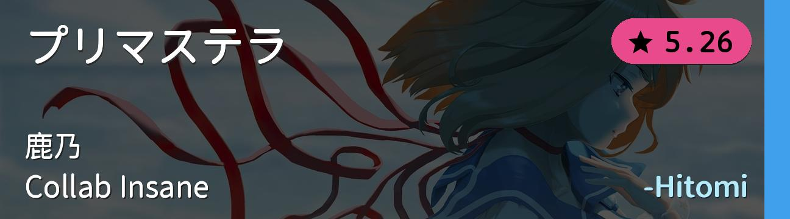 | NM | 综合 |
| 2 | 4247752 | 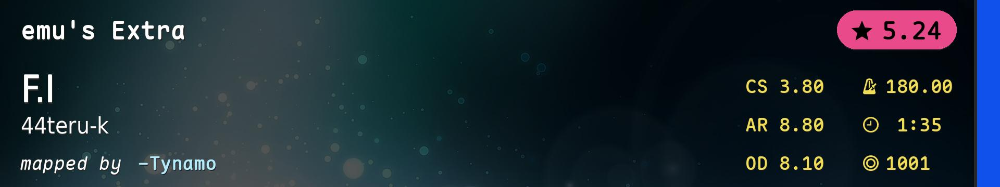 | NM | 死亡串 |
| 3 | 3970478 | 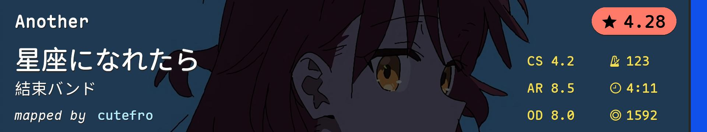 | NM | alt/手控 |
| 4 | 3434620 | 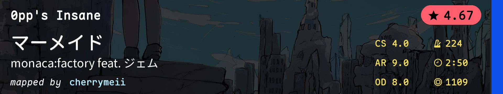 | NM | 你永远可以相信0pp的滑条 |
| 5 | 2352543 | 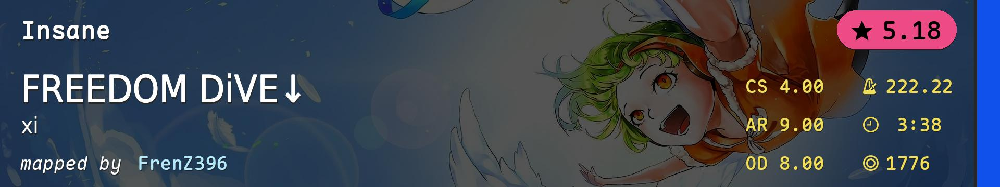 | NM | 高速 |
| 6 | 3381361 | 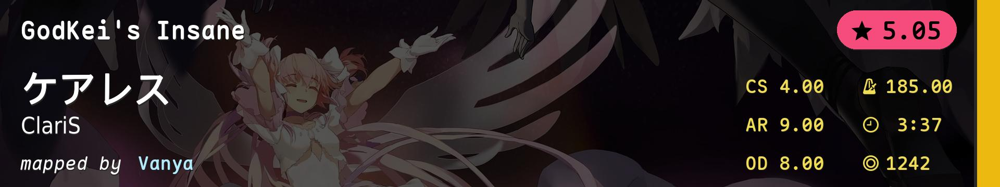 | HD | NM1+HD=HD1 |
| 7 | 4773770 | 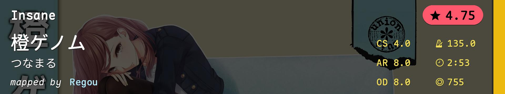 | HD | AR8 SL0 |
| 8 | 1531842 | 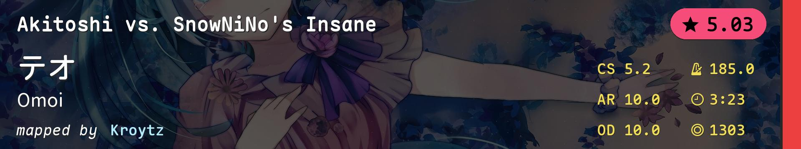 | HR | 真正的HR1在FM1 |
| 9 | 4352541 | 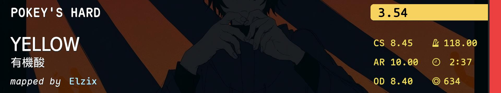 | HR | 小圈aim |
| 10 | 2776801 | 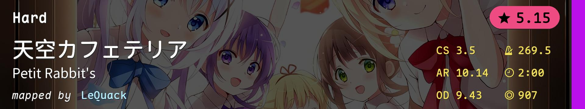 | DT(speed_change=1.75) | AR10.14 |
| 11 | 2799439 | 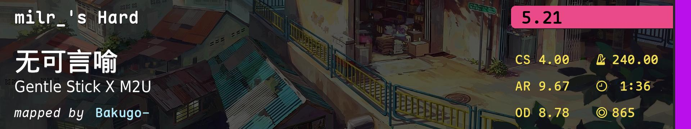 | DT | 高速切 |
| 12 | 4321990 | DT(speed_change=1.45) | light gimmick | |
| 13 | 4278022 | 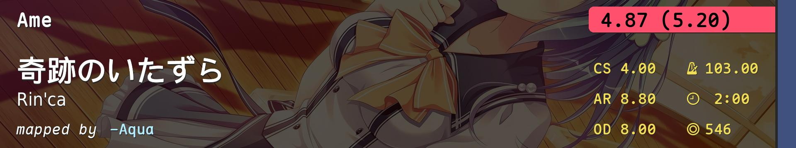 | FM | skill拼盘 |
| 14 | 3681704 | 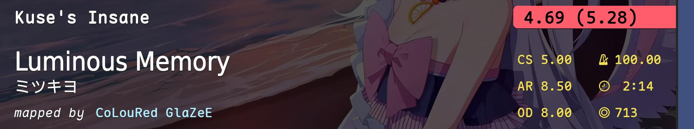 | FM | 泳装梓 |
| 15 | 4324657 | 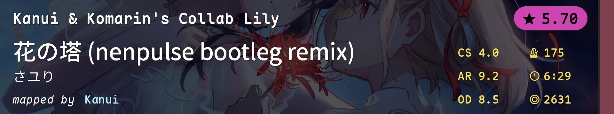 | TB | NM1 Pro Plus |